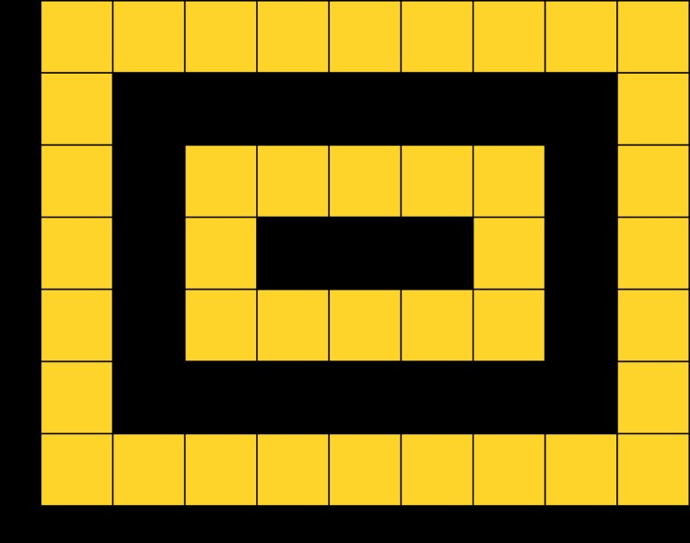

Codeforces Round #517 (Div. 2, based on Technocup 2019 Elimination Round 2)
题解报告
- A - Golden Plate
- B - Curiosity Has No Limits
- C - Cram Time
A - Golden Plate
time limit per test: 1 second
memory limit per test: 256 megabytes
You have a plate and you want to add some gilding to it. The plate is a rectangle that we split into w×h cells. There should be k gilded rings, the first one should go along the edge of the plate, the second one — 2 cells away from the edge and so on. Each ring has a width of 1 cell. Formally, the ii-th of these rings should consist of all bordering cells on the inner rectangle of size (w−4(i−1))×(h−4(i−1)).

The picture corresponds to the third example.
Your task is to compute the number of cells to be gilded.
Input
The only line contains three integers w, h and k (3≤w,h≤100,1≤k≤⌊(min(n,m)+1)/4⌋, where ⌊x⌋ denotes the number x rounded down) — the number of rows, columns and the number of rings, respectively.
Output
Print a single positive integer — the number of cells to be gilded.
Examples
input
3 3 1
output
8
input
7 9 1
output
28
input
7 9 2
output
40
Note
The first example is shown on the picture below.
The second example is shown on the picture below.
题意
给你一个nxm的正方体，然后让你往其中的一些格子镶金，从外到里总共镶k层，每层之间得隔一层，问你最后镶金的格子数。
思路
签到题目，按照意思暴力模拟就完了。
###AC代码1
2
3
4
5
6
7
8
9
10
11
12
13
14
15
16
17
18
19
20
21
22
23
24
25
26
27
28
29
30
using namespace std;
const int maxn = 1e5 + 7;
ll get_gold(ll a,ll b)
{
ll sum = a*b;
ll in = (a - 2)*(b - 2);
//printf("%lld %lld\n",sum,in);
return sum - in;
}
int main(void)
{
ll a,b,c;
scanf("%lld%lld%lld",&a,&b,&c);
ll ans = 0;
while(c--)
{
ans+=get_gold(a,b);
a-=4;
b-=4;
//printf("%lld\n",ans);
}
printf("%lld\n",ans);
return 0;
}
B - Curiosity Has No Limits
time limit per test:1 second
memory limit per test:256 megabytes
When Masha came to math classes today, she saw two integer sequences of length n−1 on the blackboard. Let’s denote the elements of the first sequence as ai (0≤ai≤3), and the elements of the second sequence as bi (0≤bi≤3).
Masha became interested if or not there is an integer sequence of length n, which elements we will denote as ti (0≤ti≤3), so that for every i (1≤i≤n−1) the following is true:
• ai=ti|ti+1 (where || denotes the bitwise OR operation) and
• bi=ti&ti+1 (where && denotes the bitwise AND operation).
The question appeared to be too difficult for Masha, so now she asked you to check whether such a sequence ti of length nn exists. If it exists, find such a sequence. If there are multiple such sequences, find any of them.
Input
The first line contains a single integer n (2≤n≤105) — the length of the sequence ti.
The second line contains n−1 integers a1,a2,…,an−1 (0≤ai≤3) — the first sequence on the blackboard.
The third line contains n−1 integers b1,b2,…,bn−1 (0≤bi≤3) — the second sequence on the blackboard.
Output
In the first line print “YES” (without quotes), if there is a sequence ti that satisfies the conditions from the statements, and “NO” (without quotes), if there is no such sequence.
If there is such a sequence, on the second line print nn integers t1,t2,…,tn (0≤ti≤3) — the sequence that satisfies the statements conditions.
If there are multiple answers, print any of them.
Examples
input
4
3 3 2
1 2 0
output
YES
1 3 2 0
input
3
1 3
3 2
output
NO
Note
In the first example it’s easy to see that the sequence from output satisfies the given conditions:
- t1|t2=(012)|(112)=(112)=3=a1 and t1&t2=t1&t2=(012)&(112)=(012)=1=b1;
- t2|t3=(112)|(102)=(112)=3=a2 and t2&t3=t2&t3=(112)&(102)=(102)=2=b2;
- t3|t4=(102)|(002)=(102)=2=a3 and t3&t4=t3&t4=(102)&(002)=(002)=0=b3.
In the second example there is no such sequence.
题意
给你两个序列a,b，对于每个元素ai,bi，问是否存在一个序列c，使得ci和ci+1的 |的结果为ai，&的结果为bi，如果有则输出YES和这个序列，否则输出NO。
思路
由题目可知，a,b的取值只有0，1，2，3，不难发现c的值范围也只能从0~3，而且总长也只有1e5，直接暴力所有情况，只要有一组满足情况把这一组数据输出就好了。
我一开始发现，对于这三个数的|与&情况也一共也只有9种，思路也是枚举所有可能，但是最后却写到找规律去了，而且规律最后还WA T9了。。能暴力就不要瞎写系列。
AC代码
1 |
|
C - Cram Time
time limit per test:1 second
memory limit per test:256 megabytes
In a galaxy far, far away Lesha the student has just got to know that he has an exam in two days. As always, he hasn’t attended any single class during the previous year, so he decided to spend the remaining time wisely.
Lesha knows that today he can study for at most aa hours, and he will have bb hours to study tomorrow. Note that it is possible that on his planet there are more hours in a day than on Earth. Lesha knows that the quality of his knowledge will only depend on the number of lecture notes he will read. He has access to an infinite number of notes that are enumerated with positive integers, but he knows that he can read the first note in one hour, the second note in two hours and so on. In other words, Lesha can read the note with number kk in kkhours. Lesha can read the notes in arbitrary order, however, he can’t start reading a note in the first day and finish its reading in the second day.
Thus, the student has to fully read several lecture notes today, spending at most aa hours in total, and fully read several lecture notes tomorrow, spending at most bb hours in total. What is the maximum number of notes Lesha can read in the remaining time? Which notes should he read in the first day, and which — in the second?
Input
The only line of input contains two integers a and b (0≤a,b≤10e9) — the number of hours Lesha has today and the number of hours Lesha has tomorrow.
Output
In the first line print a single integer n (0≤n≤a) — the number of lecture notes Lesha has to read in the first day. In the second line print nn distinct integers p1,p2,…,pn (1≤pi≤a), the sum of all pi should not exceed a.
In the third line print a single integer mm (0≤m≤b) — the number of lecture notes Lesha has to read in the second day. In the fourth line print mm distinct integers q1,q2,…,qm (1≤qi≤b), the sum of all qi should not exceed b.
All integers pi and qi should be distinct. The sum n+m should be largest possible.
Examples
input
3 3
output
1
3
2
2 1
input
9 12
output
2
3 6
4
1 2 4 5
Note
In the first example Lesha can read the third note in 3 hours in the first day, and the first and the second notes in one and two hours correspondingly in the second day, spending 3 hours as well. Note that Lesha can make it the other way round, reading the first and the second notes in the first day and the third note in the second day.
In the second example Lesha should read the third and the sixth notes in the first day, spending 99 hours in total. In the second day Lesha should read the first, second fourth and fifth notes, spending 12 hours in total.
题意
你有两天时间看书，第一天得看n个小时，第二天得看m个小时。每天 你都可以从1~ n+m …当中任意选择 许多的整数时间段来看书，用过的整数时间段就不能重复利用。问如何安排看书时间，使得整数时间段使用的数量最多。分别输出两天每天总共使用的整数时间段，并且输出这些整数时间段的时间。
思路
还是暴力+一点点贪心。
不难发现，总存在一个时间综合sum，使得1 + 2 + 3 +…. + sum >= n && 1 + 2 + 3 +…. + sum <= m , 而这个sum 的从1的累加求和又能恰好将两天所需要的时间全部看完。而且一定是可以分配的（可能有剩余，但是不影响），我们现在关键是找这个sum，从1开始累加，累加到总时间大于n + m时，这个i值就是最大的时间段sum。
而且不知道为什么，所有小于等于这个最大时间段的时间就是可以恰好分完给每一天。
剩下就从这个sum往1跑一遍就好啦，先给第一天，如果这个当前时间段大于第一天的剩余所需时间，就给第二天，总能恰好分完的。
AC代码
1 |
|
D题像是一个DP + 路径还原，等补完再补题解。